pacman::p_load(prophet, tidyverse, plotly)In this post, we continue learning about Prophet by following the code in the documentation. Prophet is a procedure implemented in R or Python for forecasting time series data.
My previous post covered the start of the documentation up to the section on Seasonality, Holiday Effects, And Regressors.
Loading R Packages
We load the following packages into our environment using p_load() of the pacman package. We use pacman so that any packages that are not installed will be automatically installed. If all packages are already installed, then the code block is equivalent to a call of library() to load the packages.
The loaded packages include:
prophet - package for importing, managing and processing vector-based geospatial data
tidyverse - collection of packages for performing data importation, wrangling and visualization
plotly - package for the creation of interactive data visualizations
Multiplicative Seasonality
Prophet uses additive seasonality as a default– which means that the effect of a season is added onto the trend to arrive at a forecast. The example below, using data on the number of air passengers, shows a case where additive seasonality does not work:
df <- read.csv('https://raw.githubusercontent.com/facebook/prophet/main/examples/example_air_passengers.csv')
m <- prophet(df)Disabling weekly seasonality. Run prophet with weekly.seasonality=TRUE to override this.Disabling daily seasonality. Run prophet with daily.seasonality=TRUE to override this.future <- make_future_dataframe(m, 50, freq = 'm')
forecast <- predict(m, future)
plot(m, forecast)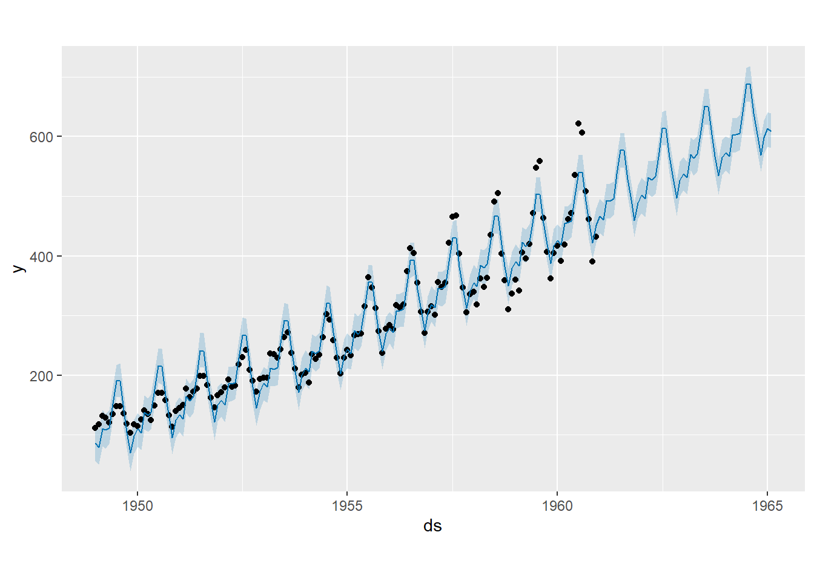
Note that the dots show the actual historical data, while the line and bands show the forecast. We see that the seasonality is overstated in the beginning of the horizon, while it is understated in the latter part of the horizon. This means that the seasonality effect is clearly not a constant additive factor, and that it should be growing with the trend– which implies that it should be treated as multiplicative seasonality.
In order to instruct Prophet to use multiplicative seasonality, we use the parameter seasonality.mode = 'multiplicative'.
m <- prophet(df, seasonality.mode = 'multiplicative')Disabling weekly seasonality. Run prophet with weekly.seasonality=TRUE to override this.Disabling daily seasonality. Run prophet with daily.seasonality=TRUE to override this.forecast <- predict(m, future)
plot(m, forecast)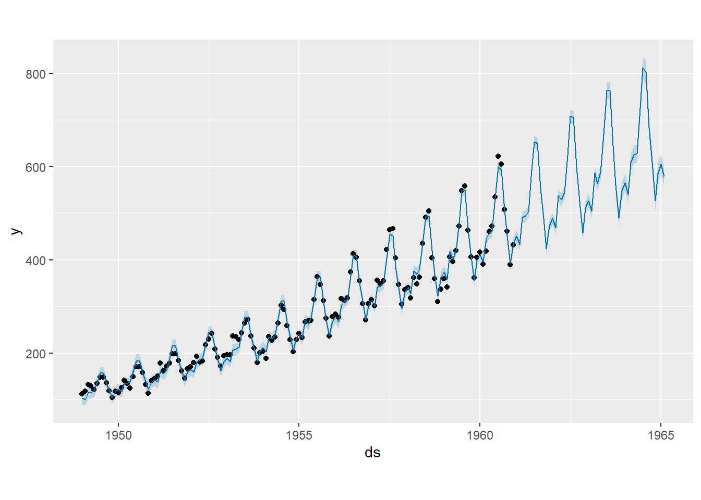
Plotting the components will also show that the seasonality effects as a percentage of the trend.
prophet_plot_components(m, forecast)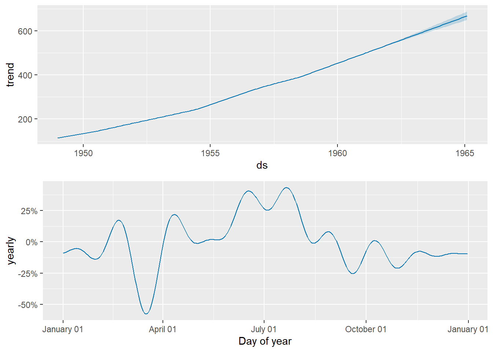
The parameter seasonality.mode = 'multiplicative' also applies to the holiday effects, other seasonalities and extra regressors. This behavior can be overridden by using the mode argument (with the value 'additive' or 'multiplicative') when adding those elements. For example, the block below sets built-in seasonality to ‘multiplicative’, but includes added seasonality and extra regressor as ‘additive’.
m <- prophet(seasonality.mode = 'multiplicative')
m <- add_seasonality(m, 'quarterly', period = 91.25, fourier.order = 8, mode = 'additive')
m <- add_regressor(m, 'regressor', mode = 'additive')Uncertainty Intervals
By default, Prophet includes uncertainty intervals in the forecast. These have several important assumptions behind them, and the uncertainty comes from three sources:
- Uncertainty in the trend
- Uncertainty in the seasonality estimates
- Additional observation noise
Uncertainty in the Trend
The biggest source of forecast uncertainty comes from the potential of future trend changes. We currently assume that the trend changes (with regards to their frequency and their magnitude) in our history will repeat in the future, but we will never know for sure. By computing for the distribution of the trend changes, we obtain the uncertainty interval for these.
This assumption on the trend also means that allowing higher flexibility in the rate of change, i.e., by increasing changepoint_prior_scale, will increase the forecast uncertainty.
The width of the uncertainty interval by default is set to 80%, but can be set using the parameter interval.width.
m <- prophet(df, interval.width = 0.95)Disabling weekly seasonality. Run prophet with weekly.seasonality=TRUE to override this.Disabling daily seasonality. Run prophet with daily.seasonality=TRUE to override this.forecast <- predict(m, future)Uncertainty in the Seasonality
By default, Prophet only returns uncertainty in the trend and observation noise. To also return uncertainty in seasonality, we need to do full Bayesian sampling using the parameter mcmc.samples.The code block below does it for the first six months of the Peyton Manning data from the beginning of the documentation.
df <- read.csv('https://raw.githubusercontent.com/facebook/prophet/main/examples/example_wp_log_peyton_manning.csv')
m <- prophet(df, mcmc.samples = 300)Disabling daily seasonality. Run prophet with daily.seasonality=TRUE to override this.
SAMPLING FOR MODEL 'prophet' NOW (CHAIN 1).
Chain 1:
Chain 1: Gradient evaluation took 0.000566 seconds
Chain 1: 1000 transitions using 10 leapfrog steps per transition would take 5.66 seconds.
Chain 1: Adjust your expectations accordingly!
Chain 1:
Chain 1:
Chain 1: Iteration: 1 / 300 [ 0%] (Warmup)
Chain 1: Iteration: 30 / 300 [ 10%] (Warmup)
Chain 1: Iteration: 60 / 300 [ 20%] (Warmup)
Chain 1: Iteration: 90 / 300 [ 30%] (Warmup)
Chain 1: Iteration: 120 / 300 [ 40%] (Warmup)
Chain 1: Iteration: 150 / 300 [ 50%] (Warmup)
Chain 1: Iteration: 151 / 300 [ 50%] (Sampling)
Chain 1: Iteration: 180 / 300 [ 60%] (Sampling)
Chain 1: Iteration: 210 / 300 [ 70%] (Sampling)
Chain 1: Iteration: 240 / 300 [ 80%] (Sampling)
Chain 1: Iteration: 270 / 300 [ 90%] (Sampling)
Chain 1: Iteration: 300 / 300 [100%] (Sampling)
Chain 1:
Chain 1: Elapsed Time: 26.58 seconds (Warm-up)
Chain 1: 39.895 seconds (Sampling)
Chain 1: 66.475 seconds (Total)
Chain 1:
SAMPLING FOR MODEL 'prophet' NOW (CHAIN 2).
Chain 2:
Chain 2: Gradient evaluation took 0.000335 seconds
Chain 2: 1000 transitions using 10 leapfrog steps per transition would take 3.35 seconds.
Chain 2: Adjust your expectations accordingly!
Chain 2:
Chain 2:
Chain 2: Iteration: 1 / 300 [ 0%] (Warmup)
Chain 2: Iteration: 30 / 300 [ 10%] (Warmup)
Chain 2: Iteration: 60 / 300 [ 20%] (Warmup)
Chain 2: Iteration: 90 / 300 [ 30%] (Warmup)
Chain 2: Iteration: 120 / 300 [ 40%] (Warmup)
Chain 2: Iteration: 150 / 300 [ 50%] (Warmup)
Chain 2: Iteration: 151 / 300 [ 50%] (Sampling)
Chain 2: Iteration: 180 / 300 [ 60%] (Sampling)
Chain 2: Iteration: 210 / 300 [ 70%] (Sampling)
Chain 2: Iteration: 240 / 300 [ 80%] (Sampling)
Chain 2: Iteration: 270 / 300 [ 90%] (Sampling)
Chain 2: Iteration: 300 / 300 [100%] (Sampling)
Chain 2:
Chain 2: Elapsed Time: 24.887 seconds (Warm-up)
Chain 2: 38.14 seconds (Sampling)
Chain 2: 63.027 seconds (Total)
Chain 2:
SAMPLING FOR MODEL 'prophet' NOW (CHAIN 3).
Chain 3:
Chain 3: Gradient evaluation took 0.000334 seconds
Chain 3: 1000 transitions using 10 leapfrog steps per transition would take 3.34 seconds.
Chain 3: Adjust your expectations accordingly!
Chain 3:
Chain 3:
Chain 3: Iteration: 1 / 300 [ 0%] (Warmup)
Chain 3: Iteration: 30 / 300 [ 10%] (Warmup)
Chain 3: Iteration: 60 / 300 [ 20%] (Warmup)
Chain 3: Iteration: 90 / 300 [ 30%] (Warmup)
Chain 3: Iteration: 120 / 300 [ 40%] (Warmup)
Chain 3: Iteration: 150 / 300 [ 50%] (Warmup)
Chain 3: Iteration: 151 / 300 [ 50%] (Sampling)
Chain 3: Iteration: 180 / 300 [ 60%] (Sampling)
Chain 3: Iteration: 210 / 300 [ 70%] (Sampling)
Chain 3: Iteration: 240 / 300 [ 80%] (Sampling)
Chain 3: Iteration: 270 / 300 [ 90%] (Sampling)
Chain 3: Iteration: 300 / 300 [100%] (Sampling)
Chain 3:
Chain 3: Elapsed Time: 22.558 seconds (Warm-up)
Chain 3: 38.022 seconds (Sampling)
Chain 3: 60.58 seconds (Total)
Chain 3:
SAMPLING FOR MODEL 'prophet' NOW (CHAIN 4).
Chain 4:
Chain 4: Gradient evaluation took 0.000315 seconds
Chain 4: 1000 transitions using 10 leapfrog steps per transition would take 3.15 seconds.
Chain 4: Adjust your expectations accordingly!
Chain 4:
Chain 4:
Chain 4: Iteration: 1 / 300 [ 0%] (Warmup)
Chain 4: Iteration: 30 / 300 [ 10%] (Warmup)
Chain 4: Iteration: 60 / 300 [ 20%] (Warmup)
Chain 4: Iteration: 90 / 300 [ 30%] (Warmup)
Chain 4: Iteration: 120 / 300 [ 40%] (Warmup)
Chain 4: Iteration: 150 / 300 [ 50%] (Warmup)
Chain 4: Iteration: 151 / 300 [ 50%] (Sampling)
Chain 4: Iteration: 180 / 300 [ 60%] (Sampling)
Chain 4: Iteration: 210 / 300 [ 70%] (Sampling)
Chain 4: Iteration: 240 / 300 [ 80%] (Sampling)
Chain 4: Iteration: 270 / 300 [ 90%] (Sampling)
Chain 4: Iteration: 300 / 300 [100%] (Sampling)
Chain 4:
Chain 4: Elapsed Time: 28.3 seconds (Warm-up)
Chain 4: 37.787 seconds (Sampling)
Chain 4: 66.087 seconds (Total)
Chain 4: Warning: There were 558 transitions after warmup that exceeded the maximum treedepth. Increase max_treedepth above 10. See
https://mc-stan.org/misc/warnings.html#maximum-treedepth-exceededWarning: Examine the pairs() plot to diagnose sampling problemsWarning: Bulk Effective Samples Size (ESS) is too low, indicating posterior means and medians may be unreliable.
Running the chains for more iterations may help. See
https://mc-stan.org/misc/warnings.html#bulk-essWarning: Tail Effective Samples Size (ESS) is too low, indicating posterior variances and tail quantiles may be unreliable.
Running the chains for more iterations may help. See
https://mc-stan.org/misc/warnings.html#tail-essforecast <- predict(m, future)This replaces the typical MAC estimation with MCMC sampling, and will take longer depending on how many observations there are. (i.e., the code now takes several minutes vs several seconds to fit the model)
Once completed, we should also be able to see the uncertainty in the seasonal components when we plot them.
prophet_plot_components(m, forecast)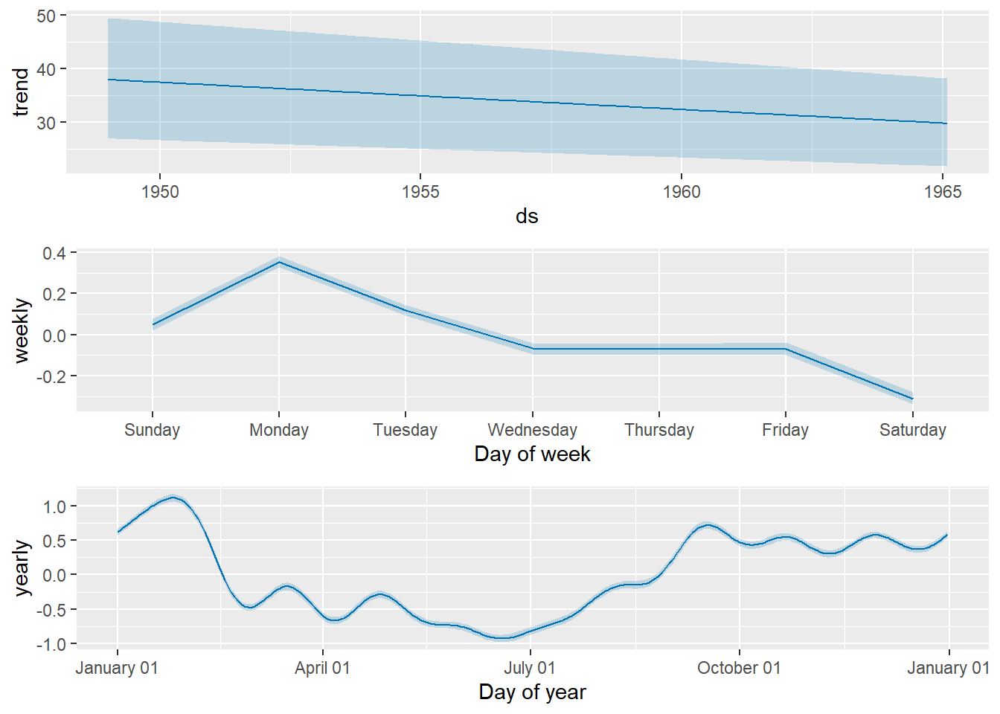
Outliers
In Prophet, outliers can affect the forecast and/or the uncertainty estimate.
The code below creates a forecast based on the log of the Wikipedia page visits to the R page, but includes a block of bad data.
df <- read.csv('https://raw.githubusercontent.com/facebook/prophet/main/examples/example_wp_log_R_outliers1.csv')
m <- prophet(df)Disabling daily seasonality. Run prophet with daily.seasonality=TRUE to override this.future <- make_future_dataframe(m, periods = 1096)
forecast <- predict(m, future)
plot(m, forecast)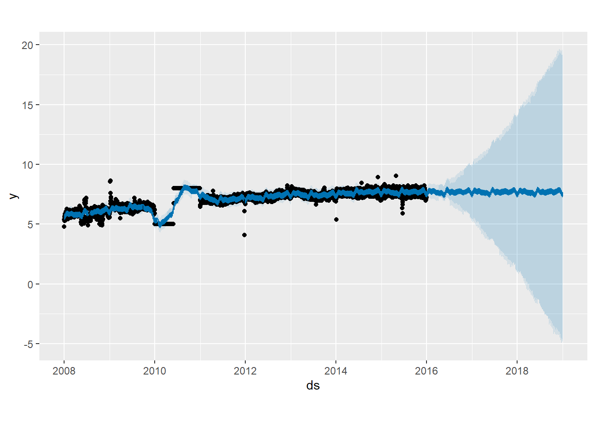
The forecast seasms reasonable, however, the uncertainty interval into the future becomes too wide. Prophet handledd the outlier in the history by fitting them with a trend change. The uncertainty modeled is based on an expectation that future trend changes will be of a similar magnitude.
In this example, the best approach in handling the outliers is by removing them. Prophet is able to manage missing data. Their values should be set to NA in the history, but the dates should still be included in the future dataframe, which lets Prophet predict their values for those historical dates.
outliers <- (as.Date(df$ds) > as.Date('2010-01-01')
& as.Date(df$ds) < as.Date('2011-01-01'))
df$y[outliers] = NA
m <- prophet(df)Disabling daily seasonality. Run prophet with daily.seasonality=TRUE to override this.forecast <- predict(m, future)
plot(m, forecast)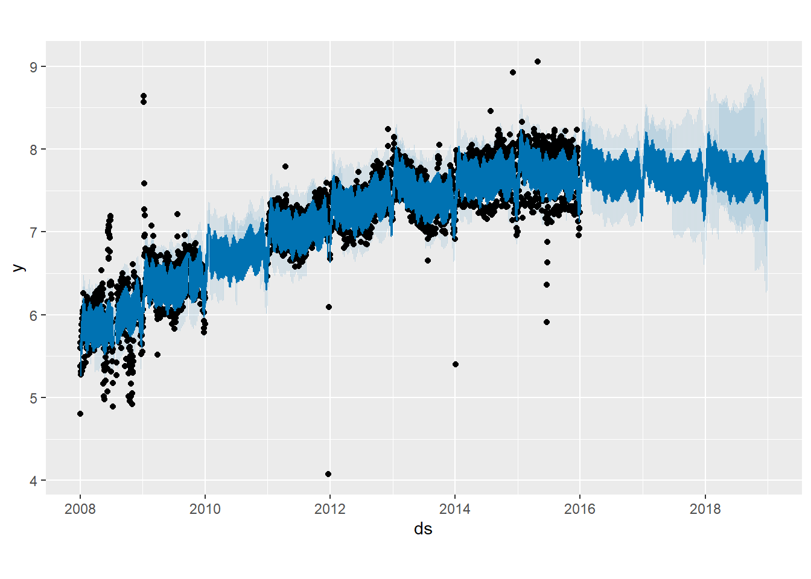
The example below illustrates the other case. Extreme outliers in June 2015 distort the seasonality estimate which affects the forward forecast.
df <- read.csv('https://raw.githubusercontent.com/facebook/prophet/main/examples/example_wp_log_R_outliers2.csv')
m <- prophet(df)Disabling daily seasonality. Run prophet with daily.seasonality=TRUE to override this.future <- make_future_dataframe(m, periods = 1096)
forecast <- predict(m, future)
plot(m, forecast)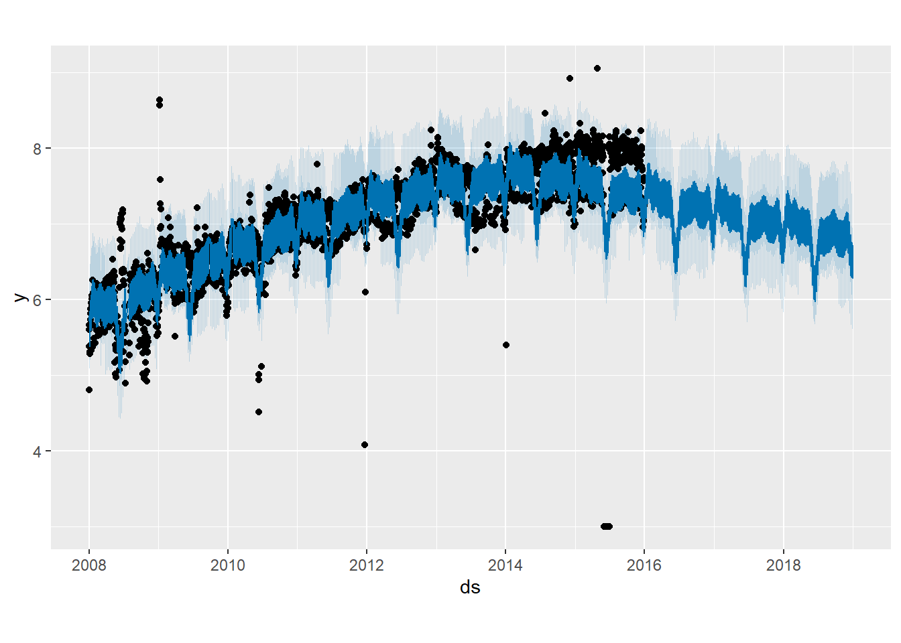
For these cases, the best approach is still to remove the outliers.
outliers <- (as.Date(df$ds) > as.Date('2015-06-01')
& as.Date(df$ds) < as.Date('2015-06-30'))
df$y[outliers] = NA
m <- prophet(df)Disabling daily seasonality. Run prophet with daily.seasonality=TRUE to override this.forecast <- predict(m, future)
plot(m, forecast)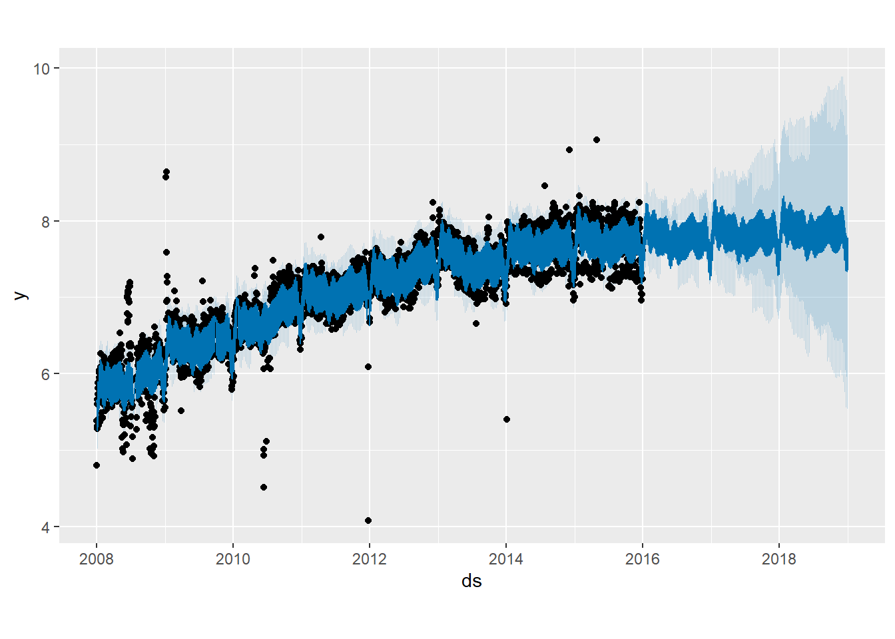
Non-Daily Data
Sub-daily Data
Prophet can also make sub-daily forecasts by passing a dataframe with timestamps in the ds column. The timestamps should be in the format “YYYY-MM-DD HH:MM:SS”. When this is done, daily seasonality is automatically fit.
The code below fits a Prophet model using data on the temperatures in Yosemite in 5 minute intervals.
df <- read.csv('https://raw.githubusercontent.com/facebook/prophet/main/examples/example_yosemite_temps.csv')
m <- prophet(df, changepoint.prior.scale=0.01)Disabling yearly seasonality. Run prophet with yearly.seasonality=TRUE to override this.future <- make_future_dataframe(m, periods = 300, freq = 60 * 60)
fcst <- predict(m, future)
plot(m, fcst)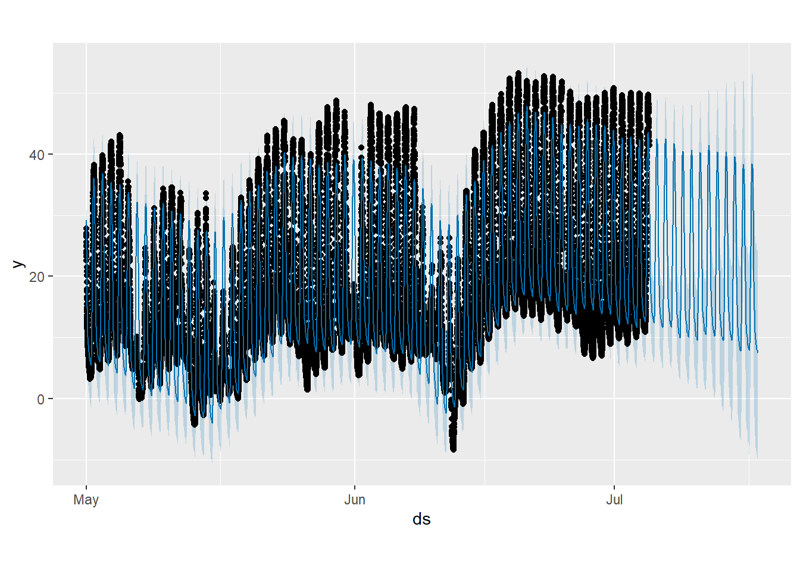
The components plot will show the daily seasonality:
prophet_plot_components(m, fcst)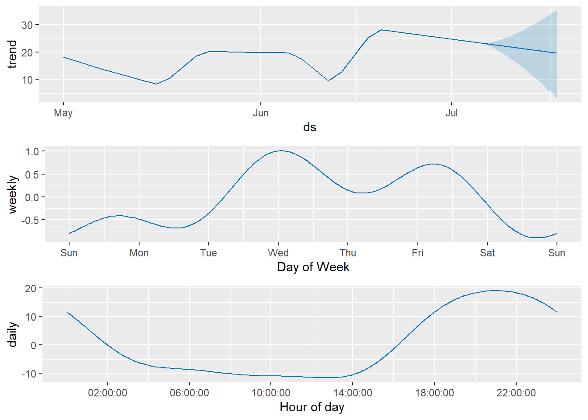
Data with Regular Gaps
Suppose the previous dataset only covered recordings between 12am and 6am:
df2 <- df %>%
mutate(ds = as.POSIXct(ds, tz="GMT")) %>%
filter(as.numeric(format(ds, "%H")) < 6)
m <- prophet(df2)Disabling yearly seasonality. Run prophet with yearly.seasonality=TRUE to override this.future <- make_future_dataframe(m, periods = 300, freq = 60 * 60)
fcst <- predict(m, future)
plot(m, fcst)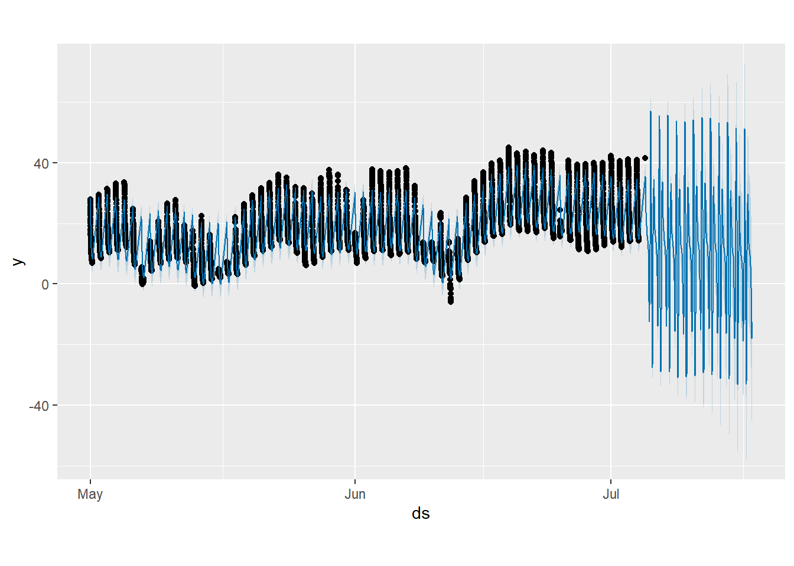
The forecast appears poor and the future shows very large fluctuations than what actually happened in the past. This is due to the fact that the model includes daily cycles, but we only have data for part of the day, leading to unconstrained seasonality for the 3/4 of the day. To address this, we need to only make predictions for the times where we have the historical data for.
future2 <- future %>%
filter(as.numeric(format(ds, "%H")) < 6)
fcst <- predict(m, future2)
plot(m, fcst)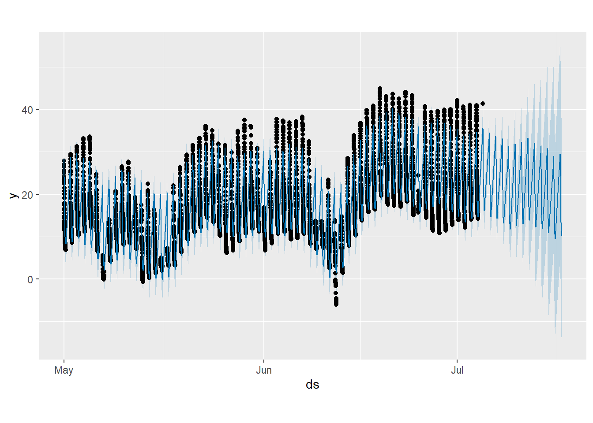
This also applies to other datasets or timeframes– for example, in cases where we only have data for weekdays and not weekends.
Monthly Data
Prophet can be used to model monthly data, but the underlying model is still continuous time. This means that we can get strange results if we try to get daily forecasts from such models.
In the code below, we use Prophet to forecast US retail sales volume for the next 10 years:
df <- read.csv('https://raw.githubusercontent.com/facebook/prophet/main/examples/example_retail_sales.csv')
m <- prophet(df, seasonality.mode = 'multiplicative')Disabling weekly seasonality. Run prophet with weekly.seasonality=TRUE to override this.Disabling daily seasonality. Run prophet with daily.seasonality=TRUE to override this.future <- make_future_dataframe(m, periods = 3652)
fcst <- predict(m, future)
plot(m, fcst)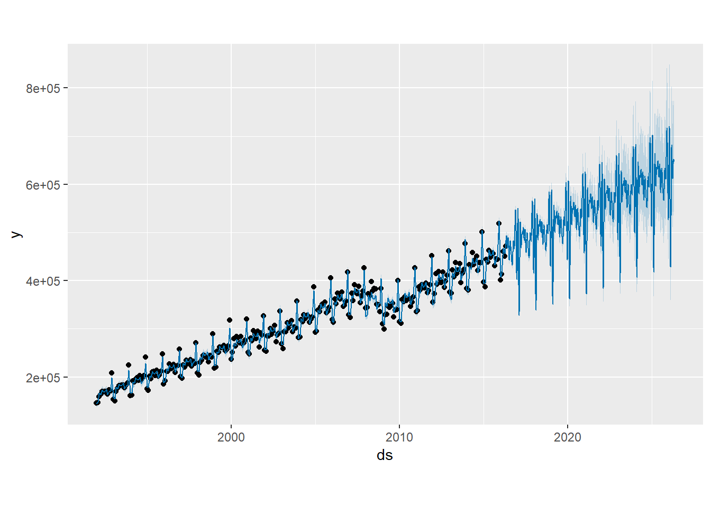
This approach has the same issue as the previous section– we only have historical data in the beginning of each month. To solve this, we only need to make predictions for monthly data. This is done by passing the frequency into the parameter make_future_dataframe:
future <- make_future_dataframe(m, periods = 120, freq = 'month')
fcst <- predict(m, future)
plot(m, fcst)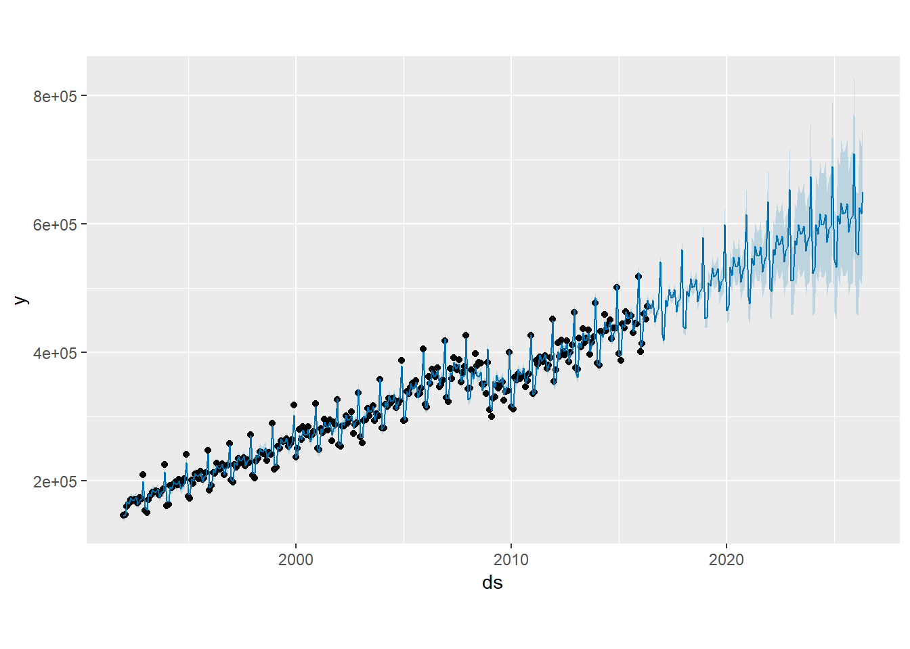
When modeling monthly data, yearly seasonality can also be modeled using binary regressors: for example is_jan, is_feb, etc. When using such regressors, please note that we should set yearly_seasonality=False
Diagnostics
Cross Validation
Prophet is able to cross validate by measuring the forecast error using historical data. This is done by selecting points in the history and only computing for the forecast up to that point, and comparing them against the actuals.
The cross-validation procedure can be done automatically for a range of cutoff points using the cross_validation function. A forecast will for every point between every cutoff and cutoff + horizon. The resulting dataframe will then be used to compare the forecasted and the actual value.
The code below uses the Peyton Manning data used in the first section of the documentation, and does cross-validation to to measure performance over a horizon of 365 days, starting after 730 days of historical training data, and then making a prediction every 18- days.
df <- read.csv('https://raw.githubusercontent.com/facebook/prophet/main/examples/example_wp_log_peyton_manning.csv')
future <- make_future_dataframe(m, periods = 365)
m <- prophet(df)Disabling daily seasonality. Run prophet with daily.seasonality=TRUE to override this.df.cv <- cross_validation(m, initial = 730, period = 180, horizon = 365, units = 'days')Making 11 forecasts with cutoffs between 2010-02-15 and 2015-01-20head(df.cv) y ds yhat yhat_lower yhat_upper cutoff
1 8.242493 2010-02-16 8.958207 8.479288 9.446057 2010-02-15
2 8.008033 2010-02-17 8.724616 8.174788 9.207106 2010-02-15
3 8.045268 2010-02-18 8.608486 8.086112 9.128043 2010-02-15
4 7.928766 2010-02-19 8.530360 8.032728 9.064048 2010-02-15
5 7.745003 2010-02-20 8.272438 7.815714 8.773349 2010-02-15
6 7.866339 2010-02-21 8.603761 8.080369 9.099036 2010-02-15Custom cutoffs can also be supplied as a list of dates to the cutoffs parameter:
cutoffs <- as.Date(c('2013-02-15', '2013-08-15', '2014-02-15'))
df.cv2 <- cross_validation(m, cutoffs = cutoffs, horizon = 365, units = 'days')The performance_metrics function can be used to provide useful statistics for the prediction performance as a function of the distance from the cutoff. The key statistics computed are mean squared error (MSE), root mean square error (RMSE), mean absolute error (MAE), mean absolute percent error (MAPE), median absolute error (MDAPE), and coverage of the lower and upper interval estimates. These measures are computed on a rolling window of the predictions in the cross validation output. By default, 10% of the predictions are included in each window, but this behavior can be changed with the rolling_window argument.
df.p <- performance_metrics(df.cv)
head(df.p) horizon mse rmse mae mape mdape smape
1 37 days 0.4959939 0.7042683 0.5061311 0.05864420 0.05008934 0.05894241
2 38 days 0.5017514 0.7083441 0.5110983 0.05921954 0.05028111 0.05957785
3 39 days 0.5239985 0.7238774 0.5171854 0.05981824 0.05008934 0.06030243
4 40 days 0.5313039 0.7289059 0.5200964 0.06012956 0.05008934 0.06068341
5 41 days 0.5388025 0.7340317 0.5211082 0.06021023 0.04976458 0.06082750
6 42 days 0.5426476 0.7366462 0.5215315 0.06023442 0.05008934 0.06090484
coverage
1 0.6765646
2 0.6754226
3 0.6726816
4 0.6738237
5 0.6813614
6 0.6841023Performance measures can be visualized with plot_cross_validation_metric. The code below creates the plot for MAPE. The x-axis gives the rolling window, while dots show the absolute percent error for each prediction, while the blue line is the MAPE.
plot_cross_validation_metric(df.cv, metric = 'mape')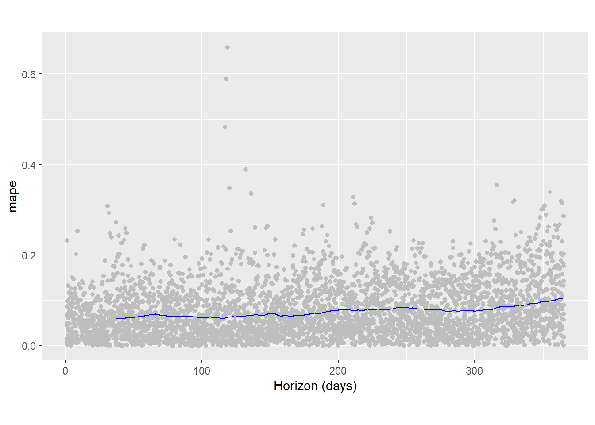
Hyperparameter Tuning
Cross validation can be used for hyperparameter tuning of the model. The online documentation provides an implementation for Python, but with the help of ChatGPT / Copilot, we have the same for R below. The code iterates across combination of changepoint_prior_scale and seasonality_prior_scale and captures their performace with regards to RMSE.
library(purrr)
# Define parameter grid
param_grid <- expand.grid(
changepoint_prior_scale = c(0.001, 0.01, 0.1, 0.5),
seasonality_prior_scale = c(0.01, 0.1, 1.0, 10.0)
)
# Function to evaluate a single parameter combination
evaluate_params <- function(params, df, cutoffs) {
m <- prophet(
df,
changepoint.prior.scale = params$changepoint_prior_scale,
seasonality.prior.scale = params$seasonality_prior_scale
)
df_cv <- cross_validation(
m,
cutoffs = cutoffs,
horizon = 30, # 30 days
units = "days"
)
df_perf <- performance_metrics(df_cv, rolling_window = 1)
return(df_perf$rmse[1])
}
# Run tuning
rmses <- map_dbl(
seq_len(nrow(param_grid)),
~ evaluate_params(param_grid[.x, ], df, cutoffs)
)Disabling daily seasonality. Run prophet with daily.seasonality=TRUE to override this.
Disabling daily seasonality. Run prophet with daily.seasonality=TRUE to override this.
Disabling daily seasonality. Run prophet with daily.seasonality=TRUE to override this.
Disabling daily seasonality. Run prophet with daily.seasonality=TRUE to override this.
Disabling daily seasonality. Run prophet with daily.seasonality=TRUE to override this.
Disabling daily seasonality. Run prophet with daily.seasonality=TRUE to override this.
Disabling daily seasonality. Run prophet with daily.seasonality=TRUE to override this.
Disabling daily seasonality. Run prophet with daily.seasonality=TRUE to override this.
Disabling daily seasonality. Run prophet with daily.seasonality=TRUE to override this.
Disabling daily seasonality. Run prophet with daily.seasonality=TRUE to override this.
Disabling daily seasonality. Run prophet with daily.seasonality=TRUE to override this.
Disabling daily seasonality. Run prophet with daily.seasonality=TRUE to override this.
Disabling daily seasonality. Run prophet with daily.seasonality=TRUE to override this.
Disabling daily seasonality. Run prophet with daily.seasonality=TRUE to override this.
Disabling daily seasonality. Run prophet with daily.seasonality=TRUE to override this.
Disabling daily seasonality. Run prophet with daily.seasonality=TRUE to override this.# Combine results
tuning_results <- param_grid %>%
mutate(rmse = rmses)
print(tuning_results) changepoint_prior_scale seasonality_prior_scale rmse
1 0.001 0.01 0.7576287
2 0.010 0.01 0.5263877
3 0.100 0.01 0.5224794
4 0.500 0.01 0.5312384
5 0.001 0.10 0.7499510
6 0.010 0.10 0.5415193
7 0.100 0.10 0.5211062
8 0.500 0.10 0.5278160
9 0.001 1.00 0.7529393
10 0.010 1.00 0.5314370
11 0.100 1.00 0.5195791
12 0.500 1.00 0.5317848
13 0.001 10.00 0.7592193
14 0.010 10.00 0.5389851
15 0.100 10.00 0.5195598
16 0.500 10.00 0.5318993Aside from the two hyperparameters above, others that can be explored for tuning are:
holidays_prior_scaleseasonality_mode- as discussed in the earlier section of this post, the possible values are:additive(default), andmultiplicative
Handling Shocks
The documentation includes a case study covering a demand shock coming from the COVID-19 pandemic. I will not cover the case here, but the reader can just refer to the detailed documentation.
Additional Topics
Saving Models
Prophet models can be saved in R using saveRDS and can be reloaded using readRDS.
saveRDS(m, file="model.RDS") # Save model
m <- readRDS(file="model.RDS") # Load modelFlat Trend
We may want to force a flat trend when time series exhibit strong seasonality patterns or when we want to rely on other regressors. This can be done by passing the argument growth='flat' when building the model.
m <- prophet(df, growth='flat')Disabling daily seasonality. Run prophet with daily.seasonality=TRUE to override this.Custom Trends
There are three built-in trends in Prophet:
- piecewise linear
- piecewise logistic growth
- flat
To use another trend, one can download the source code from github and modify the trend function as a local branch. (and then install that local version)
Updating Fitted Models
Prophet models can only be fit once, and a new model needs to be rebuilt when new data comes in. In most cases, this is not an issue as the recreation of the model is fast enough. It is, however, possible to speed up the recreation of the model by warm-starting the fit from the model parameters of the last one.
End Notes
I will end my code-along of the Prophet documentation here. There are some sections skipped which are mainly features from their latest versions.
The documentation ended by a note that the team will not be making any more changes to the current codebase but recommended a few references for some state-of-the-art forecasting packages like:
Packages from the Nixtla group
NeuralProphet - Prophet-style implementation in PyTorch
I might look into these and cover these in a future post to learn more about the available forecasting techniques or packages out there.